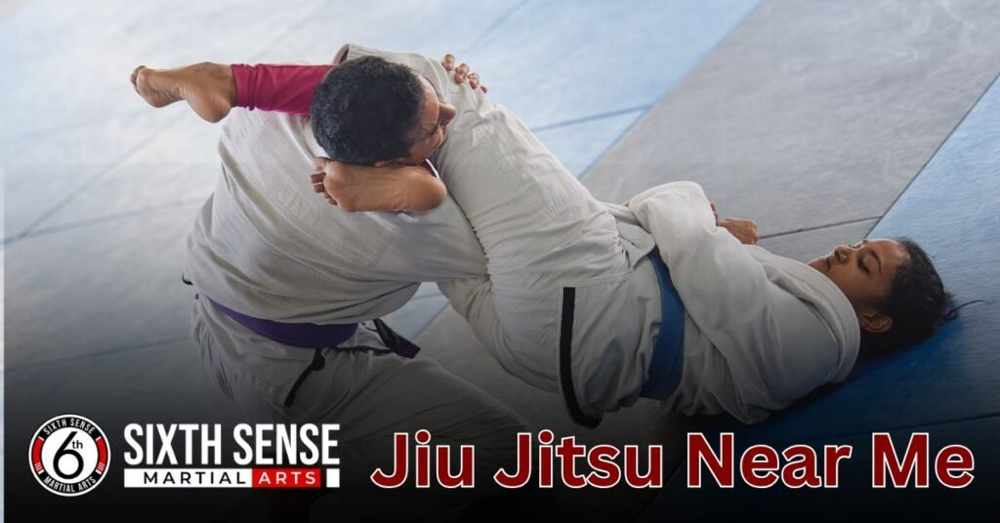
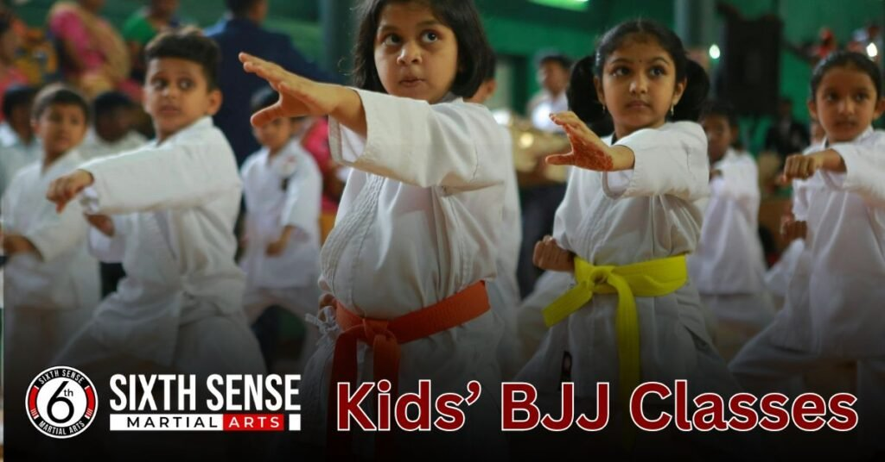
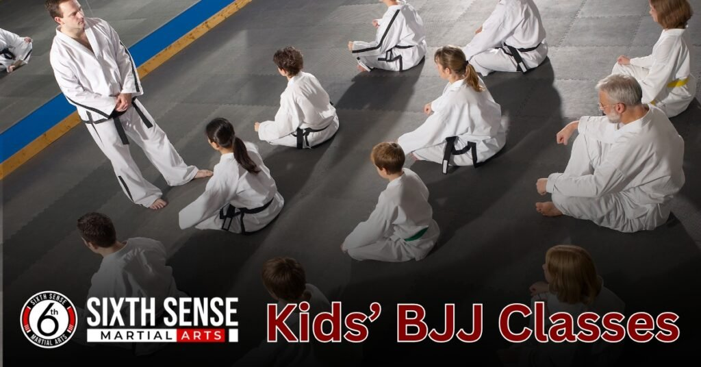

Jiu jitsu Near Me with Caring Coaches and Budget friendly

Jiu jitsu near me isn’t just about fighting it’s a smart, technical martial art that people of any age or fitness level can learn. Unlike other combat sports, Brazilian jiu jitsu (or BJJ) doesn’t rely on brute strength, but uses leverage, timing, and technique to help you control your opponent. Whether you’re looking to train for fitness, real-life defense, or mental growth, this art offers more than just physical gains.
When I started my search for a local gym or academy, I wanted a space where I felt safe, not judged. And that’s what I found a community that supports anyone, not just athletes. Through controlling drills, rolling on the ground, and practicing submissions, I realized how much this sport focuses on strategy rather than power. Jiu jitsu near me became more than a class it became a part of my life.
Looking for Jiu Jitsu Near Me? SixthSense MMA Has You Covered
Jiu jitsu near me isn’t just about fighting it’s a smart, technical martial art that people of any age or fitness level can learn. Unlike other combat sports, Brazilian jiu jitsu (or BJJ) doesn’t rely on brute strength, but uses leverage, timing, and technique to help you control your opponent. Whether you’re looking to train for fitness, real-life defense, or mental growth, this art offers more than just physical gains.
When I started my search for a local gym or academy, I wanted a space where I felt safe, not judged. And that’s what I found a community that supports anyone, not just athletes. Through controlling drills, rolling on the ground, and practicing submissions, I realized how much this sport focuses on strategy rather than power. Jiu jitsu near me became more than a class it became a part of my life.
Jiu Jitsu Programs Available Near You
Whether you’re a parent looking for jiu jitsu classes for your child, or an adult ready to train in martial arts, there’s something available for every age, skill, and style. At our local gym, we offer programs designed to match your learning needs whether you’re a total beginner or advanced and looking to sharpen your technique.
Our area location makes it easy to access jiu jitsu near you, with flexible programs and class times that fit your schedule. If you’re searching for the right place to start or continue your journey, we’ve got the training and support you need.
Kids’ BJJ Classes
Our kids BJJ classes are built to teach children essential skills like focus, respect, and discipline, all while having fun in a safe, friendly environment. Through age-appropriate program design, we help kids learn self-defense, build confidence, and truly enjoy an activity that keeps their body and mind active. Parents love seeing their kids grow on and off the mat, and children love coming to a place where they can move, learn, and thrive.

Adult Beginner and Fundamentals Programs
If you’re an adult starting out, our beginner classes focus on the fundamentals, with a step-by-step approach to train you in the core of jiu jitsu. You’ll learn simple escapes, submissions, and positions at a pace that fits your comfort. Each class is tailored to build your confidence on the mat, with personalized coaching and a strong foundation to make you feel comfortable and capable every step of the way.
Advanced and Competition Prep Classes
For those with more experience, our advanced and competition prep programs are designed to push your skills to a higher level. Through focused drilling, intense rolling, strategic sessions, and live rounds, you’ll develop the techniques, pressure, and mental and physical toughness needed to compete and fight with confidence. Our expert coaches provide structure and challenge so you can sharpen every detail and reach your peak.
Private Coaching Sessions
If you’re hitting a plateau or need to fix specific techniques, our private coaching sessions offer one-on-one and small group training tailored to your personal goals. Each session is led by a dedicated coach who will fast-track your learning, providing the attention and training you need to progress quickly and effectively. Whether you’re preparing for a match or just want to advance at your own speed, our tailored approach ensures results that match your needs.
What to Expect in Your First Class
JStarting something new like jiu jitsu can feel a little intimidating at first, but at SixthSense, we’ve created a friendly, stress-free gym environment where beginners are always supported. Our team and coach welcome you with positive energy, guiding you step by step so you can learn at your own pace and feel truly comfortable.
Each class is designed to help you build confidence, get familiar with training, and enjoy the full experience of learning practical self-defense and fitness without pressure. From the beginning, you’ll feel like part of something special, with clear instruction that makes getting started fun and rewarding even if it’s your first time ever in an MMA class.
No Experience? No Problem
If you’re a complete beginner with zero martial arts background, don’t worry—our team is here to guide you every step of the way. You’ll learn the basics, like key positions, safe movements, and fundamental drills, all at a pace that fits you.
We make everything simple, clear, and easy to follow, without any pressure to be perfect. On the mat, you’ll train with a partner in a safe and welcoming environment, and you’ll see how quickly you can grow, gain confidence, and enjoy the martial arts experience.
What to Wear and Bring
For your first session, you’ll want to wear comfortable workout clothes like a t-shirt, shorts, or pants just something you can move in easily. If you’re doing gi or no-gi training, we’ll help you get the right uniform later, but for now, just bring a bottle of water, a towel, and an open mind. We’ll go through a light warm-up and start slow so you can get used to the mat and the flow of class.
How We Make New Members Feel Welcome
From the moment you check in, you’ll be introduced to our coach, meet the friendly staff, and take a quick tour of the gym. Our community is full of students, members, and team support that truly wants to help you succeed. You’ll be shown how things work, have everything explained clearly, and never feel out of place. At SixthSense, we make sure you feel like a real part of something from day one because every new member matters.
Affordable, Flexible Pricing
At SixthSense, we believe that high-quality jiu jitsu and MMA training should be an investment in your health and growth not a burden on your budget. That’s why we offer affordable, flexible pricing options that fit both family and solo training needs.
Whether you’re a student or a working professional, our plans are committed to giving you access to the best without draining your bank. With consistent classes and a schedule that works for you, we make it easy to train regularly and stay on track with a plan that truly fits.
Membership Plans for Every Budget
Our pricing is built around fair plans that suit your budget and training needs, whether you want unlimited access or more flexible weekly or monthly membership options. At SixthSense, you’re never locked into something that doesn’t work for youn there are no hidden fees, no unexpected surprises, just clear payment choices for different goals. We keep our options open so you can train the way that fits your life.
Free Trial Class for New Students
At SixthSense, we want you to see, feel, and explore our training before making any commitment—that’s why we offer a free trial class for new students. It’s a no strings-attached chance to experience the gym, meet our coaches, and decide if our MMA program is the right fit for you. Take your time, get a feel for the environment, and make your decision when you’re ready.
Discounts for Families, Students, and Military
We believe in making training more accessible for everyone in our community. That’s why our pricing includes special discounts for families, students, and military personnel because dedication deserves to be rewarded. Whether you’re supporting a loved one or managing your budget, our plans help you balance your goals with real support so you can join and grow with us without stress over enrollment costs.
Why Choose SixthSense MMA for Jiu Jitsu Classes
At SixthSense, we’ve created an environment where every student from beginners to competition ready fighters gets hands-on training with certified, experienced instructors who truly understand the importance of clear teaching. Whether you’re into gi or no-gi, each session is designed to build skills without pressure, offering one on one attention when needed to break down complex movements into easy, step-by-step techniques.
Our coaches explain the moves, help you improve, and support your growth in a local gym you can trust. With years of experience and a passionate approach, SixthSense makes the difference by focusing on what you’re learning and preparing you for mma, competition, or just staying active under stress.
It’s a place where professionals guide you, where every movement, guard, and pass is part of a bigger plan to help you stay strong and connected for the long-term.
Experienced and Certified Instructors
At SixthSense, our experienced and certified instructors bring real expertise and years of hands-on training into every class whether you’re a total beginner or preparing for competition. Each instructor offers personal coaching that’s tailored one when needed, breaking down complex techniques and movements into clear, simple steps so you can build real skills in both gi and no gi jiu jitsu.
These true professionals explain every guard and pass with passion and understanding, making it easier to stay motivated and focused as you grow into a stronger, more confident version of yourself.

Ego Free, Supportive Environment
At SixthSense, we’ve built a community where beginners, returning students, and even the most experienced feel truly welcome. Our team creates a positive, supportive space with zero judgment or ego, where respect and belief in your potential replace intimidation or pressure.
Every day, we focus on helping you feel safe, building confidence, and making your learning experience stress-free and encouraging. No matter where you are in your journey, you’re part of something different a place designed to let you progress at your pace, with coaches, partners, and energy that lifts you up, not holds you back.
Options for All Levels Beginner to Advanced
Whether you’re just starting, picking up where you left off, or aiming to sharpen advanced strategies, SixthSense offers structured classes for all skill levels beginner, intermediate, and advanced.
Our carefully planned sessions teach both foundational and complex techniques, guiding students through position, control, movement, submissions, and live rolling with trained partners. You’ll find pathways to progress, with smart coaching that supports your learning and ensures steady growth, no matter your level.
Clean Facility, Top Tier Mats, and a Safety First Approach
Your safety, health, and comfort matter to us. Our facility is always clean, with well-maintained, cushioned, top-tier mats designed for safe grappling, sparring, and training.
We promote injury free progress through warm ups, smart movement planning, proper techniques, and safe live sessions where you can tap when needed. Our coaches take responsibility for setting the tone emphasizing hygiene, cleanliness, and a structured approach to keep everyone secure and supported throughout every round.
What Our Students Say About SixthSense MMA
“ The coaching is excellent, and the team makes you feel truly welcome from day one.”
Jason, beginner from Coppell
“I was nervous at first, but the training is clean, professional, and super supportive. I’ve learned so much in just a few months.”
Alicia, jiu jitsu student in Irving
“The vibe here is different. You walk through the door and know you’re in a place you can trust.”
Malik, MMA hobbyist
“I’ve tried other places near me, but this one has real structure and experienced coaches who care.”
–Priya, grappler from Valley Ranch
“My journey started with zero experience. The instruction was clear, and the support was constant.”
Kevin, dad & beginner
“Flexible programs, expert coaching, and a clean gym everything I was searching for.”
Leo, competitive blue belt
“I found this spot while Googling ‘jiu jitsu near me.’ The reviews were true—it’s the real deal.”
Sami, 21, new to Texas
Ready to Start Your Jiu Jitsu Journey? Join Us at SixthSense MMA Today
Getting started with SixthSense MMA is simple whether you’re just exploring or ready to book your first class, our team is happy to answer any questions and help you feel comfortable. We’re located in the 75019 area of Texas, right off MacArthur Boulevard, with easy-to-access parking and plenty of space in a clean, welcoming training environment.
You can call or text us at 469-972-7800, or stop by on Monday through Saturday to meet the team. We’re open to all nearby cities, including those looking for flexible access with no contracts. Just contact us, come drive over, and you’ll find a real MMA experience that makes you feel at home in no time.
Conclusion
If you’re searching for jiu jitsu or MMA training near you, this is your moment. The door to something different real coaching, expert instruction, and a clean, welcoming location starts the moment you walk in. Whether you’re a beginner or a seasoned grappler, our team is here to support you with flexible programs, personal attention, and a trust based environment where consistent effort leads to real growth. You’ll train with experienced coaches, find your rhythm, and see your confidence build through every step of the journey. It’s easy to book, just one click or visit and we’re here to help you get started today with training that feels great and fits your life.
For more details you can visit our social accouts :
FAQ's
Yes, jiu jitsu is absolutely the right martial arts choice for beginners even those with zero experience or strength to start with. The classes are beginner-friendly and taught in a step-by-step way that lets you build real skills and confidence at your own pace. The focus is always on safety, proper training, and learning the basics in a safe and supportive setting. No matter your size or background, this is the best place to start, because it gives you everything you need to grow the right way, from the ground up and to rely on techniques that actually work.
Many people often think they need to be in perfect shape to begin jiu jitsu or start training, but the fact is you don’t. Our classes include light warmups and practice that’s scaled to your current level, so you can build strength, stamina, and confidence over time. Whether you’re looking to lose weight, get more active, or just try something new, there’s no pressure to be “fit enough.” Rolling is even optional in the beginning, and you’ll get the support you need to grow at your own pace while learning jiu jitsu the right way.
Two to three days per week is a great way to start your jiu jitsu training. It gives your body enough time to absorb the techniques while keeping you in a steady routine. You can always adjust based on your lifestyle and how comfortable you feel as you go. Some students find that just showing up consistently makes a big difference, and over time, many choose to increase their sessions. Our flexible schedule makes it easy to fit training in, so you can get the most out of your time at a pace that works for you.
Yes, we offer both gi and no-gi training options to suit different styles and preferences. If you want to try the traditional uniform, the gi comes with grips and guards that focus on control, while no-gi involves rash guards and shorts, emphasizing speed and movement. Each has its own benefits, and we recommend exploring both to see what you enjoy most. Our schedule includes dedicated times for each, so you can train the way that suits you best and experience everything MMA has to offer at SixthSense.
We offer programs for all ages—from kids’ BJJ classes that teach focus, discipline, and self-defense in a fun environment, to adult beginner, intermediate, and advanced programs. Whether you’re a child, teen, or adult, there’s a class designed for your skill level and goals.
Train with us in Coppell
The first class is free. Shorts, a t-shirt and a water bottle. We lend the rest.
Book a free class